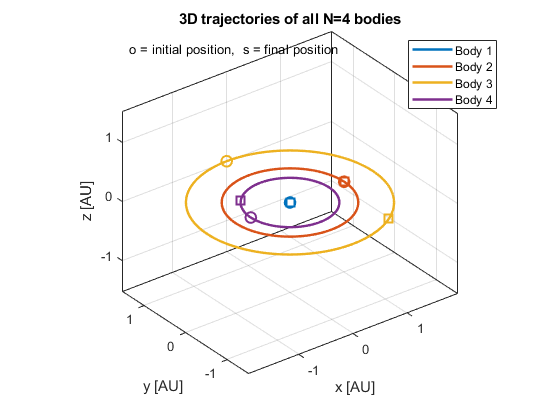
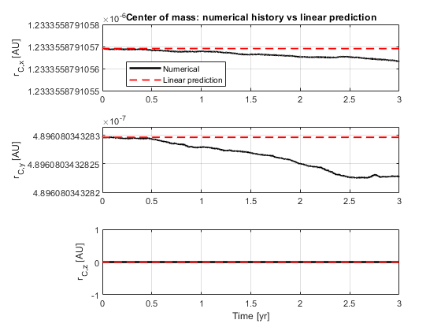
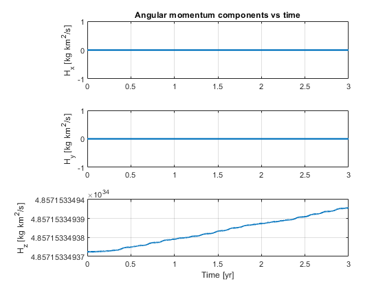
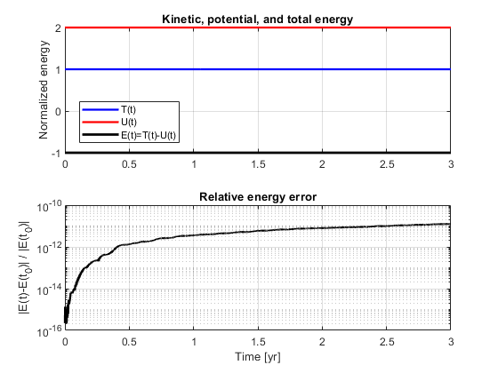

Contents
HW 1 — Numerical simulation of the N-body problem
MAE 240 This script: (a) integrates the Newtonian N-body equations in first-order state-space form (b) plots 3D trajectories with initial/final markers (c) verifies center-of-mass motion (d) verifies angular momentum conservation (e) verifies total energy behavior
State vector: x = [r1; r2; ...; rN; v1; v2; ...; vN] in R^(6N)
Units used here: distance = km mass = kg time = s
clear; clc; close all;
1) Problem setup
G = 6.67430e-20; % km^3/(kg s^2) AU = 1.496e8; % km yr = 365.25*24*3600; % s % ----------------------------- % Choose N >= 3 bodies % ----------------------------- N = 4; % Brief justification: % One dominant central mass plus three lighter bodies gives a clear, % stable test case for verifying center of mass, angular momentum, % and total energy behavior. bodyNames = {'Body 1','Body 2','Body 3','Body 4'}; % Masses [kg] m = [1.989e30, 5.972e24, 6.39e23, 4.867e24]; % Sun/Earth/Mars/Venus-like M = sum(m); % Initial positions [km] % Planar initial conditions: z = 0 for all bodies r0 = zeros(N,3); r0(1,:) = [0, 0, 0]; r0(2,:) = [1.000*AU, 0, 0]; r0(3,:) = [0, 1.524*AU, 0]; r0(4,:) = [-0.723*AU, 0, 0]; % Initial velocities [km/s] % Approximately circular around Body 1 v0 = zeros(N,3); v0(1,:) = [0, 0, 0]; v0(2,:) = [0, sqrt(G*m(1)/norm(r0(2,:))), 0]; v0(3,:) = [-sqrt(G*m(1)/norm(r0(3,:))), 0, 0]; v0(4,:) = [0, -sqrt(G*m(1)/norm(r0(4,:))), 0]; % Optional: shift to exact zero total momentum frame P0 = sum(m.' .* v0, 1); vCM0 = P0 / M; for i = 1:N v0(i,:) = v0(i,:) - vCM0; end % Pack into state vector x0 = [r_all; v_all] x0 = [reshape(r0.',3*N,1); reshape(v0.',3*N,1)]; % Time span t0 = 0; tf = 3*yr; tout = linspace(t0, tf, 3000); % ODE solver settings opts = odeset('RelTol',1e-11,'AbsTol',1e-13);
2) Integrate the first-order system xdot = f(x)
[T, X] = ode45(@(t,x) eom_nbody(t,x,m,G), tout, x0, opts);
% Extract position and velocity histories
Rhist = X(:,1:3*N);
Vhist = X(:,3*N+1:6*N);
3) Part (a): 3D trajectories
figure('Color','w'); hold on; grid on; box on; axis equal; colors = lines(N); % Store only orbit line handles for legend hOrbit = gobjects(N,1); for i = 1:N Ri = Rhist(:,3*i-2:3*i); % Orbit line hOrbit(i) = plot3(Ri(:,1)/AU, Ri(:,2)/AU, Ri(:,3)/AU, ... 'LineWidth',1.8, 'Color',colors(i,:)); % Initial marker plot3(Ri(1,1)/AU, Ri(1,2)/AU, Ri(1,3)/AU, ... 'o', 'MarkerSize',8, 'LineWidth',1.5, ... 'Color',colors(i,:), 'HandleVisibility','off'); % Final marker plot3(Ri(end,1)/AU, Ri(end,2)/AU, Ri(end,3)/AU, ... 's', 'MarkerSize',8, 'LineWidth',1.5, ... 'Color',colors(i,:), 'HandleVisibility','off'); end xlabel('x [AU]'); ylabel('y [AU]'); zlabel('z [AU]'); title('3D trajectories of all N=4 bodies'); legend(hOrbit, bodyNames, 'Location','best'); view(3); % Note showing marker meaning text(0.02, 0.95, 'o = initial position, s = final position', ... 'Units','normalized', 'FontSize',10);

4) Part (b): Center of mass
Compute numerical center of mass r_C(t)
rC = zeros(length(T),3); vC = zeros(length(T),3); for k = 1:length(T) rk = zeros(N,3); vk = zeros(N,3); for i = 1:N rk(i,:) = Rhist(k,3*i-2:3*i); vk(i,:) = Vhist(k,3*i-2:3*i); end rC(k,:) = (m * rk) / M; vC(k,:) = (m * vk) / M; end % Linear prediction: % r_C(t) = r_C(t0) + rdot_C(t0)*(t-t0) rC0 = rC(1,:); vC0 = vC(1,:); rC_pred = rC0 + (T - T(1))*vC0; % Deviation rC_err = vecnorm(rC - rC_pred, 2, 2); max_rC_dev = max(rC_err); fprintf('\n===== Center of Mass Check =====\n'); fprintf('Max deviation between numerical r_C(t) and linear prediction = %.6e km\n', max_rC_dev); figure('Color','w'); tiledlayout(3,1); labels = {'x','y','z'}; for j = 1:3 nexttile; plot(T/yr, rC(:,j)/AU,'k','LineWidth',1.8); hold on; plot(T/yr, rC_pred(:,j)/AU,'r--','LineWidth',1.4); grid on; ylabel(sprintf('r_{C,%s} [AU]',labels{j})); if j == 1 title('Center of mass: numerical history vs linear prediction'); legend('Numerical','Linear prediction','Location','best'); end if j == 3 xlabel('Time [yr]'); end end
===== Center of Mass Check ===== Max deviation between numerical r_C(t) and linear prediction = 1.338799e-11 km

5) Part (c): Angular momentum
H(t) = sum_i m_i r_i x v_i
H = zeros(length(T),3); for k = 1:length(T) Hk = [0 0 0]; for i = 1:N ri = Rhist(k,3*i-2:3*i); vi = Vhist(k,3*i-2:3*i); Hk = Hk + m(i)*cross(ri,vi); end H(k,:) = Hk; end H0 = H(1,:); H0_norm = norm(H0); rel_H_drift = vecnorm(H - H0, 2, 2) / H0_norm; max_rel_H_drift = max(rel_H_drift); fprintf('\n===== Angular Momentum Check =====\n'); fprintf('Max relative drift ||H(t)-H(t0)|| / ||H(t0)|| = %.6e\n', max_rel_H_drift); % Verify planarity z_all = zeros(length(T),N); for i = 1:N z_all(:,i) = Rhist(:,3*i); end max_abs_z = max(abs(z_all),[],'all'); fprintf('Max absolute out-of-plane displacement |z| = %.6e km\n', max_abs_z); figure('Color','w'); tiledlayout(3,1); for j = 1:3 nexttile; plot(T/yr, H(:,j),'LineWidth',1.7); grid on; ylabel(sprintf('H_%s [kg km^2/s]',labels{j})); if j == 1 title('Angular momentum components vs time'); end if j == 3 xlabel('Time [yr]'); end end
===== Angular Momentum Check ===== Max relative drift ||H(t)-H(t0)|| / ||H(t0)|| = 4.771240e-12 Max absolute out-of-plane displacement |z| = 0.000000e+00 km

6) Part (d): Total energy
T = kinetic energy U = positive gravitational potential magnitude E = T - U
KE = zeros(length(T),1); U = zeros(length(T),1); E = zeros(length(T),1); for k = 1:length(T) % Kinetic energy Tk = 0; for i = 1:N vi = Vhist(k,3*i-2:3*i); Tk = Tk + 0.5*m(i)*dot(vi,vi); end % Positive potential-energy magnitude U Uk = 0; for i = 1:N-1 ri = Rhist(k,3*i-2:3*i); for j = i+1:N rj = Rhist(k,3*j-2:3*j); dij = norm(rj-ri); Uk = Uk + G*m(i)*m(j)/dij; end end KE(k) = Tk; U(k) = Uk; E(k) = Tk - Uk; end rel_E_err = abs(E - E(1)) / abs(E(1)); fprintf('\n===== Energy Check =====\n'); fprintf('Initial total energy E(t0) = %.6e kg km^2/s^2\n', E(1)); fprintf('Max relative energy error |E(t)-E(t0)| / |E(t0)| = %.6e\n', max(rel_E_err)); figure('Color','w'); tiledlayout(2,1); nexttile; plot(T/yr, KE/abs(E(1)), 'b','LineWidth',1.7); hold on; plot(T/yr, U /abs(E(1)), 'r','LineWidth',1.7); plot(T/yr, E /abs(E(1)), 'k','LineWidth',2.0); grid on; ylabel('Normalized energy'); title('Kinetic, potential, and total energy'); legend('T(t)','U(t)','E(t)=T(t)-U(t)','Location','best'); nexttile; semilogy(T/yr, rel_E_err + eps,'k','LineWidth',1.7); grid on; xlabel('Time [yr]'); ylabel('|E(t)-E(t_0)| / |E(t_0)|'); title('Relative energy error');
===== Energy Check ===== Initial total energy E(t0) = -5.822528e+27 kg km^2/s^2 Max relative energy error |E(t)-E(t0)| / |E(t0)| = 1.252937e-11

7) Summary Section
fprintf('\n===== In summary =====\n'); fprintf('1. N = %d bodies were used.\n', N); fprintf('2. The system was written in first-order state-space form xdot = f(x). \n'); fprintf('3. ode45 was used to integrate the equations of motion.\n'); fprintf('4. The center of mass followed the expected linear motion with max deviation %.3e km.\n', max_rC_dev); fprintf('5. The angular momentum relative drift was %.3e.\n', max_rel_H_drift); fprintf('6. The maximum energy relative error was %.3e.\n', max(rel_E_err)); fprintf(['7. The relative energy error stays very small during the entire simulation and increases \n' ... 'only gradually over time. This behavior shows that the numerical integration is stable and \n' ... 'accurately captures the system dynamics over the chosen time interval. The small drift is \n' ... 'caused by the accumulation of truncation and roundoff errors from the ODE solver, which is \n' ... 'expected when using a method such as ode45.\n']);
===== In summary ===== 1. N = 4 bodies were used. 2. The system was written in first-order state-space form xdot = f(x). 3. ode45 was used to integrate the equations of motion. 4. The center of mass followed the expected linear motion with max deviation 1.339e-11 km. 5. The angular momentum relative drift was 4.771e-12. 6. The maximum energy relative error was 1.253e-11. 7. The relative energy error stays very small during the entire simulation and increases only gradually over time. This behavior shows that the numerical integration is stable and accurately captures the system dynamics over the chosen time interval. The small drift is caused by the accumulation of truncation and roundoff errors from the ODE solver, which is expected when using a method such as ode45.
=========================
Local function =========================
function dxdt = eom_nbody(~, x, m, G) N = length(m); r = x(1:3*N); v = x(3*N+1:6*N); a = zeros(3*N,1); for i = 1:N ri = r(3*i-2:3*i); ai = [0;0;0]; for j = 1:N if j ~= i rj = r(3*j-2:3*j); rij = ri - rj; dij = norm(rij); ai = ai - G*m(j)*rij/(dij^3); end end a(3*i-2:3*i) = ai; end dxdt = [v; a]; end